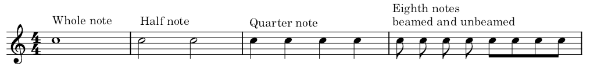
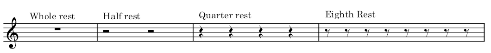
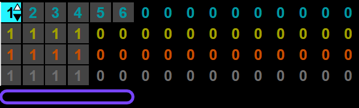
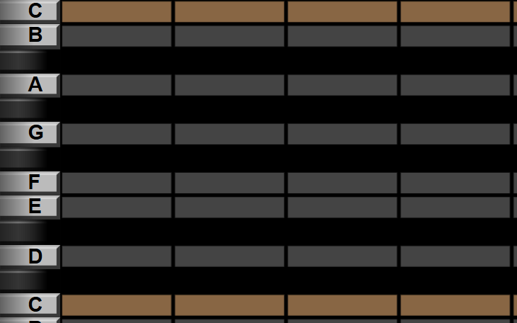

Sheet music is divided into measures by bars. The length of a measure is determined by the time signature. The most common time signature is 4/4, often called common time. This means that a measure is divided into four quarter notes. Other time signatures exist; 3/4 time divides a measure into 3 quarter notes, 7/8 divides a measure into 7 eighth notes, and so on. Most electronic music uses 4/4 time, but some artists enjoy using other time signatures. The length of a note is determined by the shape used to draw the note. A whole note has an empty note head and no stem, a half note has an empty note head and a stem, a quarter note has a filled-in note head and a stem, and an eighth note has a filled-in note head and a stem with a flag. To help organize the sheet music, eighth notes are often "beamed," and their flags are drawn connected like below.
A rest instructs a musician to stop playing for a specified period of time. The shapes of rests indicate their duration, with a whole note rest being drawn directly under a staff line, and a half note rest being drawn directly above a staff line.
We run into a small problem because now the pattern repeats these two measures. We enter the pattern view, and change the sequence of patterns in this channel: instead of playing pattern 1111 in sequence, it will play patterns 123456 in sequence. Now we can edit patterns 2-6.
Once you have finished your song, it may sound like this example beepbox song. Try changing the tempo or instrument choice.
Look at the notes in the piano roll. The notes you can play on the piano roll line up with the white keys on the keyboard, and those keys have names. What about the black keys on the keyboard? Do they have names?
An accidental is a symbol which changes the pitch of a note. For example, the note C♯, or C sharp, is the note directly above C, and the note D♭, or D flat, is the note directly below D. You may notice that these are exactly the same note. There are a lot of reasons why musicians would write this note as C♯ in some contexts, and D♭ in others, but music software writers often get frustrated with giving every note more than one name and so they just write it as C#.
Most songs do not use all 12 possible notes on the piano. Instead, they stick to a subset of notes, called a key. For example, music in the key of C uses the notes C, D, E, F, G, A, and B. These songs use the 7 white notes on a keyboard, and leave out the black notes of the keyboard. Different keys use different notes. For example, the key of G contains notes G, A, B, C, D, E, F♯.The only note here which gets an accidental is F. Alternatively, the key of B-flat major contains notes B♭, C, D, E♭, F, G, A. There is a pattern to which notes get accidentals in which key, but you don't have to deal with that.
When sheet music is written with accidentals on the staff next to the clef, that means that those notes will have those accidentals.